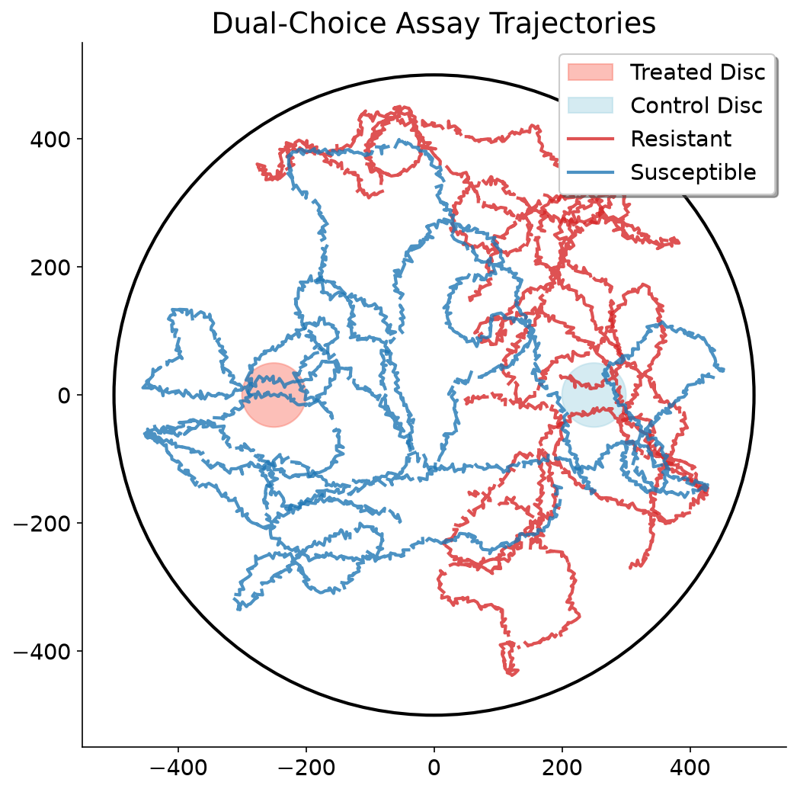
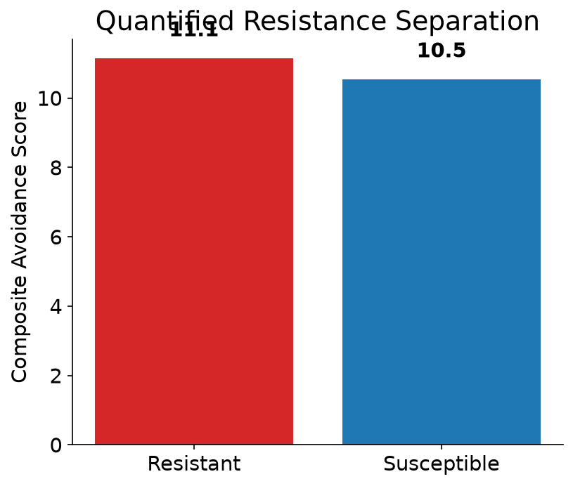
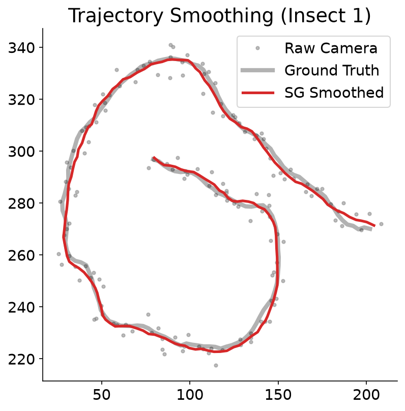
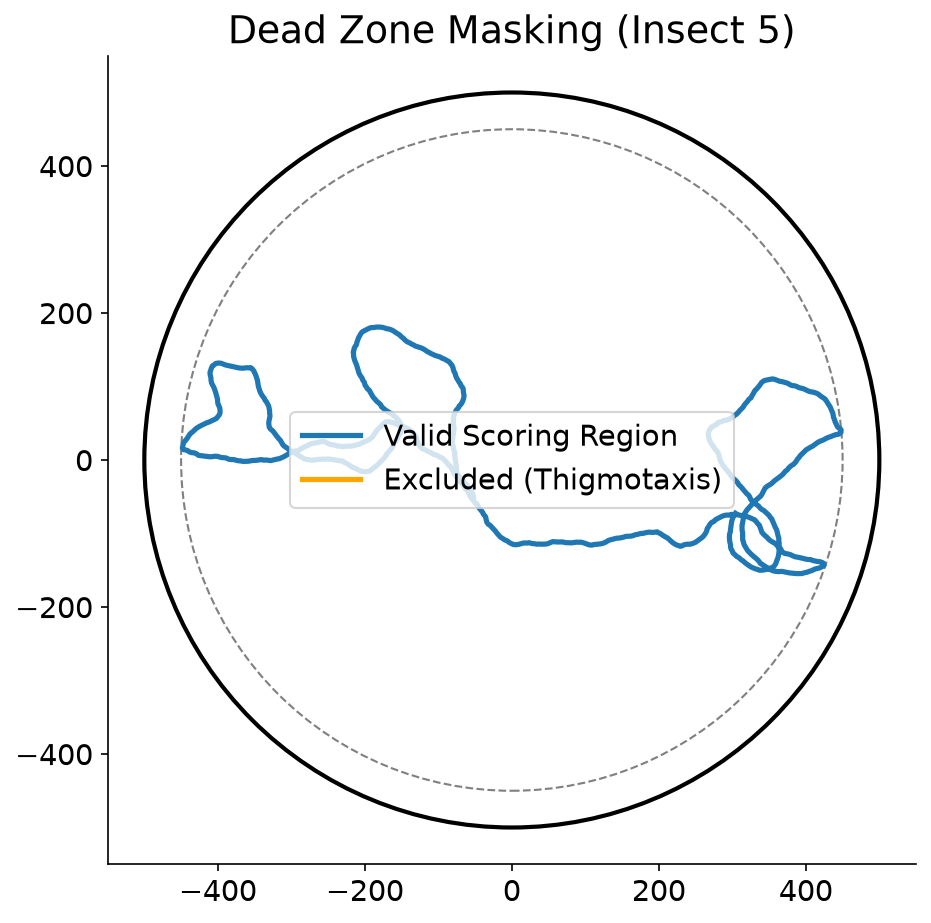

Can we detect pesticide resistance in insects before they die, just by watching how they walk?
Standard 24-hour survival tests only measure death. They are binary. They are slow.
They completely miss behavioral resistance—when an insect senses the toxin and actively alters its path to avoid a lethal dose.
WE MEASURE HESITATION.
Our solution is an auditable, classical computer vision pipeline. Using OpenCV MOG2 and Kalman-SORT tracking, we extract raw trajectories from dual-choice leaf-disc assays.
We pass those coordinates into a strict physical kinematics engine. Every metric is explainable. Every score is based on rigid math, not a hidden neural network.




We quantify biological hesitation by isolating deceleration and sharp reorientation.
Every calculation, from the Gaussian chemical gradient boundary to the discrete derivatives, is thoroughly documented.
READ FULL METHODOLOGY